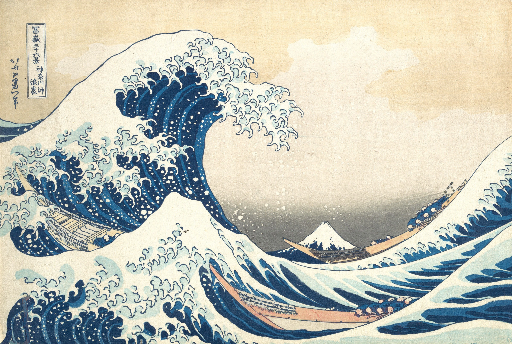
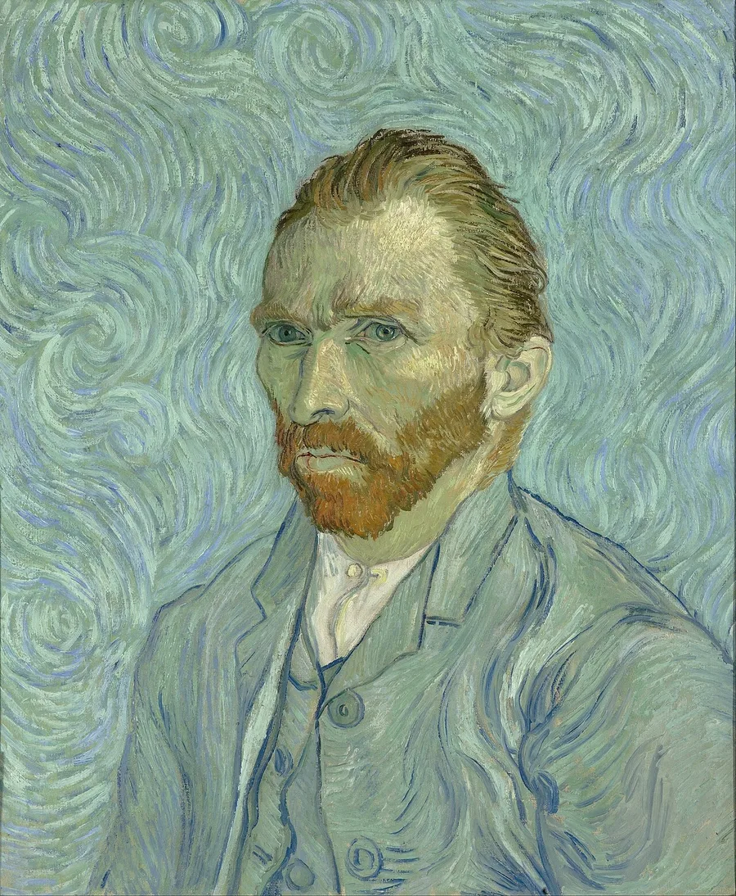
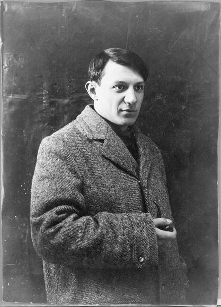
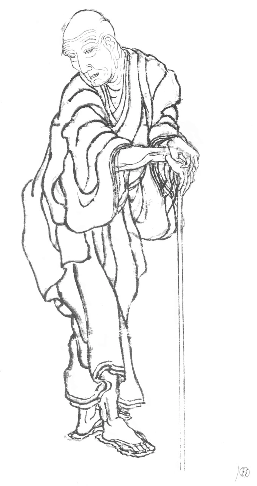
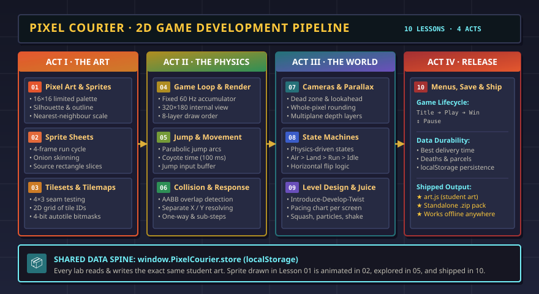

A making pathway for Kindergarten through Grade 12 · Sister to 3D Design
2D Design & Animation
Make a mark. Layer and compose it on a flat surface. Rig it to move. Then make it play.
Everything in this module happens on a two-dimensional picture plane: a painted canvas, a carved woodblock, a stack of raster pixel layers, a rigged stick-figure skeleton, or a scrolling 2D game screen. Study the artists who mastered the flat surface, practice non-destructive photo editing in Layer Lab, animate characters in our in-house Pivot Stick Figure Studio, and ship a complete 2D platformer.

Interactive Warm-Up · How Flat Screens Fake Depth
Five Depth Cues on a 2D Picture Plane
A screen or sheet of paper has only X (width) and Y (height)—there is no physical Z depth. Toggle the five classic 2D depth cues below and drag the camera slider to see how Hokusai's woodblocks, Disney's multiplane camera, and 2D platformer games trick the eye into seeing deep space.
All 5 cues active: foreground shapes overlap midground, shrink toward the horizon, fade into sky blue, and scroll at different parallax speeds.
Unit 1 · Pioneers of the Flat Surface
Four Artists Who Changed How Flat Pictures Work
Every pioneer lesson pairs historical biography and zoomable primary-source artwork with an interactive studio lab where you can test their breakthrough firsthand.





Class discussion prompt: Each artist had only a flat surface. What did each one invent or use to show something a flat surface cannot hold on its own: glowing light, multiple viewpoints at once, multi-layer registration, or living motion?
Unit 2 · Vector Drawing, Raster Editing, Color & Layout
Control Layers, Pixels & What the Eye Sees First
Master our in-house raster image editor (Layer Lab) right inside this module, alongside interactive studios for color harmony, typographic hierarchy, and visual perception.
Vector Drawing Studio
Build a recognizable emblem from editable geometry, then export an SVG.
Composition & Layout Studio
Arrange a clear reading order and defend your choices with a quick audience test.
Poster Design Project
Combine vector art, color and typography into a poster for a real audience.
Photo Editing Workshop (Layer Lab)
Stack transparent pixel layers, hide non-destructively with alpha masks instead of erasing, mix colors with W3C blend modes, use smart subject selection and healing tools, and round-trip files as PSD, OpenRaster (.ora), PNG, and JPEG across 10 self-checking missions.
Color Theory Lab
Manipulate hue, saturation, and value; test RGB additive vs. CMY subtractive mixing; and build complementary, triadic, and split-complementary palettes.
Typography Hierarchy Studio
Tune scale, weight, line height, and kerning so a reader knows immediately where to look first, second, and third on a page or game HUD.
Optical Illusions Lab
Test over 40 interactive illusions—from opponent-color afterimages to checker-shadow luminance tricks—to see how the visual cortex interprets flat images.
Finish when: You can sketch three poster ideas, combine vector art with readable type and color, test the message with a peer, revise and export your final design. Use Layer Lab for raster compositing without destroying original pixels.
Unit 3 · 2D Rigging & Keyframe Animation
Rig a Skeleton, Pose Keyframes & Make It Move
Learn both main branches of 2D animation: skeletal joint rigging (where a parent-child bone tree rotates via forward kinematics) and frame-by-frame sprite animation.
Pivot Stick Figure Studio
Pose 12-segment stick figures with Forward Kinematics, toggle Onion Skinning and Center-of-Mass balance guides, generate smooth in-betweens, inspect real student .piv animations, and export .piv files or transparent PNG game sprite sheets.
Disney Spacing & Multiplane Lab
Test 4–24 FPS frame rates, squash-and-stretch deformation, and parallax depth across stacked foreground, midground, and background glass planes.
Sprite Sheets & Run Cycles
Paint idle, run, jump, and fall frames on a pixel grid with onion skinning, then pack them into a single horizontal sprite sheet.
Animation State Machines
Connect your idle, run, jump, and fall loops to a finite state machine so player velocity and ground contact choose the right animation automatically.
Finish when: You have posed and exported a looping character action in the Pivot Stick Figure Studio and can explain how parent-child forward kinematics positions each limb.
Unit 4 · Make It Play
The 2D Game Developer Pathway (10 Lessons)
The 2D Game Developer Pathway is a complete 10-lesson course where every student builds and ships Pixel Courier, an original 2D platformer. Every lesson's lab shares the same live browser asset store: the hero you draw in Lesson 01 is the exact character you animate in Lesson 02, move in Lesson 05, and package in Lesson 10.

-
00 · Pathway Hub & Playable Demo
Overview of the 4 acts, starter pack download, and live playable Pixel Courier testbed.
-
Act I (01–03) · Make the Art: Sprites, Animations & Tilemaps
01 Pixel Art & Sprites · 02 Sprite Sheets & Animation · 03 Tilesets & Tilemaps
-
Act II (04–06) · Make It Move: Loop, Physics & Collisions
04 Game Loop & Rendering · 05 Movement & Jump Feel · 06 Collision & Response
-
Act III & IV (07–10) · World, State Machines, Game Feel & Shipping
07 Cameras & Parallax · 08 Animation States · 09 Level Design & Game Feel · 10 Menus, Saving & Shipping
Finish when: A classmate can play your finished game from the title screen to the victory state without your help.
Sister Module
Going 3D
Flat-picture skills carry straight into three dimensions: orthographic front/side/top views become a CAD solid, raster layers become UV textures, and a 2D stick-figure walk cycle becomes a 3D skeletal armature. Continue in 3D Design, or start with Blueprint Drafting, where a flat drawing is the plan for a solid object.